1. Introduction générale : diversité, histoire et influences
La musique marocaine n’est pas un répertoire unique mais un archipel de traditions. Chaque région, chaque communauté, chaque confrérie a développé son univers sonore, ses instruments, ses rythmes et ses contextes d’usage. Cette diversité est le fruit d’une histoire longue, où se sont superposés des héritages amazighs, arabes, andalous, sahariens et subsahariens.
Ce dossier propose une lecture à plusieurs entrées : historique, géographique, organologique et technique. Il distingue soigneusement les instruments, les genres musicaux et les pratiques rituelles, trois catégories complémentaires mais différentes.
Antiquité et haut Moyen Âge. Les populations amazighes développent des formes musicales collectives liées aux fêtes agricoles et aux rites de fertilité. Instruments simples : tambours sur cadre, flûtes, vièles rustiques.
VIIIe–XVe siècle. Les dynasties arabo-musulmanes apportent le système modal (maqām), le luth (oud) et de nouvelles formes poétiques chantées.
XVe–XVIIe siècle. L’expulsion des Morisques d’Andalousie conduit à l’installation au Maroc de musiciens porteurs de la tradition andalouse.
XVIIe–XIXe siècle. La traite transsaharienne amène des populations d’Afrique de l’Ouest. Leurs descendants, les Gnawa, développent une tradition musicale et rituelle originale.
XXe siècle. L’enregistrement, la radio et le disque transforment la diffusion. Dans les années 1970, des groupes comme Nass El Ghiwane et Jil Jilala renouvellent la musique populaire. Les travaux d’Alexis Chottin (1939) et les enregistrements de Christopher Wanklyn (1966) documentent les traditions de manière systématique.
XXIe siècle. Amplification, électrification et fusions : le guembri devient parfois un instrument de scène électrique (Bab L’Bluz), tandis que les traditions se croisent avec le rock, l’électro ou le jazz. Les recherches académiques (thèses de Nathalie Fernando, travaux de Cynthia Becker) approfondissent la connaissance des répertoires rituels.
Pour entendre la diversité. L’album Music of Morocco (Smithsonian Folkways, enregistré par Christopher Wanklyn en 1966) propose un panorama sonore exceptionnel : Aïssawa de Tanger, Gnawa de Marrakech, Toqtoqa Jabalia, Ahouach du Moussem de Moulay Brahim, musiciens de café de Tétouan. Une porte d’entrée idéale.
2. Les familles d’instruments marocains
La classification de Hornbostel et Sachs (1914) répartit les instruments par mode de production du son. Au Maroc, les quatre grandes familles sont représentées, avec une richesse particulière dans les percussions. Les catalogues de la BnF et de la Bpi recensent des instruments parfois oubliés : aguâl, lîra, rhaïta nfîr, ta’nja, tbîlat, zamr.
Famille
Principe
Instruments représentatifs
Cordophones
Le son est produit par la vibration d’une ou plusieurs cordes.
Chaque fiche suit cinq critères : origine et histoire, fabrication, technique de jeu, rôle musical et évolution.
3.1 Instruments à cordes (luths, vièles, cithares, harpes)
Le guembri (sintir, hajhuj) الكمبري / الستيرCordophone
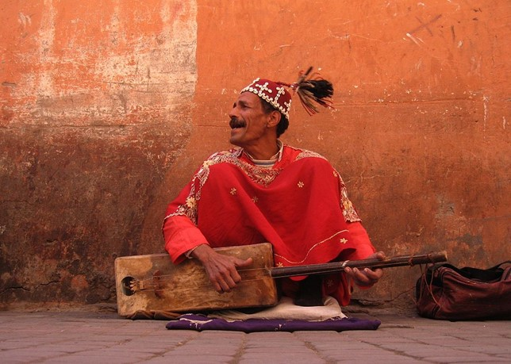
Origine et histoireLuth-basse des Gnawa, hérité de l’Afrique de l’Ouest. Également appelé hajhuj (variante). Chottin (1939) note déjà son origine « soudanaise » et sa caisse « rectangulaire ».
FabricationCaisse monoxyle recouverte de peau de cou de chameau ; manche sans frettes ; trois cordes en boyau ou en nylon. Le hajhuj désigne une variante morphologique.
Technique de jeuÀ la fois percussif et mélodique : les doigts frappent la peau tandis que le pouce pince les cordes.
Rôle musicalInstrument central et sacré de l’orchestre gnawa, réservé au maâlem.
ÉvolutionAdaptations contemporaines : micros pastille, égaliseurs et prises jack pour l’amplification scénique (voir les travaux de Sum sur la sersera du guembri).
Le lotar (loutar) الوطار / اللوطارCordophone
Origine et histoireLuth de la tradition amazighe du Souss et du Moyen Atlas, associé aux Rwaïss et aux groupes amazighs.
FabricationCaisse piriforme recouverte de peau ; manche ; trois ou quatre cordes selon les variantes (cordes en nylon).
Technique de jeuPincé avec un plectre ; son sec et rythmique.
Rôle musicalMélodie et accompagnement du chant ; en dialogue avec le ribab chez les Rwaïss.
ÉvolutionInstrument emblématique du patrimoine amazighe. L’anthologie des rwaïyes (1990), préparée par le ministère de la Culture marocain et la Maison des Cultures du Monde, documente son rôle dans l’ensemble ribab–lotar–percussions.
Le ribab / rabab الربابCordophone
Origine et histoireVièle à pique de la tradition du Souss (ribab) ; variante andalouse (rebab) à deux cordes en forme de barque.
FabricationRibab : caisse recouverte de peau, une corde en crins. Rebab andalou : caisse en barque, deux cordes.
Technique de jeuFrotté à l’archet ; timbre continu, proche de la voix. Technique du « détaché » caractéristique du jeu d’archet soussi.
Rôle musicalPorte la mélodie ; instrument identitaire du Souss (ribab) et voix de l’orchestre andalou (rebab).
ÉvolutionFacture artisanale, parfois amplifié en concert. L’encyclopédie SAGE souligne le rôle du ribab monocorde chez les ruais.
Attention : ne pas confondre le ribab amazigh (monocorde) et le rebab andalou (deux cordes).
L’oud العودCordophone
Origine et histoireLuth à manche court, hérité du monde arabe et de l’Andalousie ; central dans le takht andalou et le Melhoun.
FabricationCaisse bombée, rosace, cordes doubles (chœurs) ; quatre chœurs traditionnellement.
Technique de jeuPlectre (rîsha) ; solo mélodique et soutien harmonique.
Rôle musicalVoix mélodique et harmonique de l’orchestre andalou. Larousse précise que l’accompagnement instrumental andalou comprend « des luths (oûd-s et kwitra-s) ».
ÉvolutionInstrument emblématique de la musique savante ; facture standardisée.
La kouitra (kwitra) الكوترة / القويترةCordophone
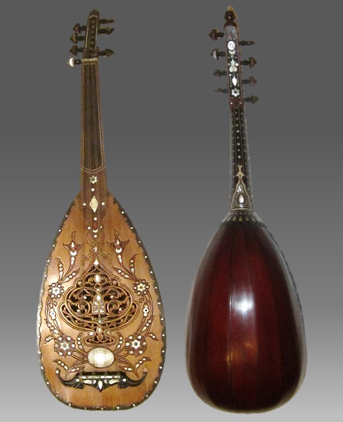
Origine et histoireLuth à manche court proche du oud, associé à la musique arabo-andalouse maghrébine (Maroc, Algérie). Larousse le cite comme l’un des luths de l’orchestre andalou marocain.
FabricationQuatre cordes doubles sur chevillier coudé à l’ancienne ; caisse bombée avec une grande rosace centrale ; touche lisse sans frettes.
Technique de jeuPlectre (rîsha) en plume d’aigle ; accord : ré-la-mi-sol ou ré-sol-la-ré.
Rôle musicalAccompagnement dans la nouba andalouse ; répertoire spécifique.
ÉvolutionInstrument historique, encore joué dans les ensembles andalous (Ensemble Kwitra, Ahbab Cheikh Salah).
L’oud ramal عود الرملCordophone
Origine et histoireLuth traditionnel de la musique arabo-andalouse marocaine, tombé en désuétude dans les années 1940 au profit du oud oriental, puis reconstitué par l’association Rawafid Moussiqia de Tanger.
FabricationQuatre cordes doubles avec un accordage particulier. Caisse robuste capable de supporter une forte tension.
Technique de jeuPlectre en plume d’aigle ; jeu ornementé.
Rôle musicalInstrument « prince des instruments » dans l’orchestre andalou marocain, aujourd’hui réhabilité.
ÉvolutionDisparu puis reconstitué au XXIe siècle ; des luthiers comme Khalid Belhaiba en fabriquent à nouveau (voir Bousselam 2022).
La kamanja et le rebab andalou الكمانجة / الربابCordophone
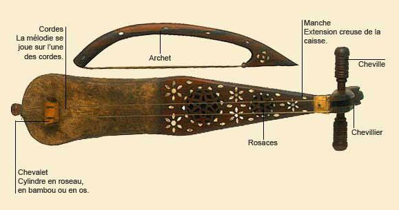
Origine et histoireLa kamanja est un violon joué à la verticale, appuyé sur le genou, particularité marocaine ; le rebab andalou est une vièle à deux cordes en forme de barque.
FabricationKamanja : lutherie de type violon ; rebab : caisse en barque, peau tendue.
Technique de jeuArchet ornementé ; position verticale pour la kamanja.
Rôle musicalVoix mélodiques principales de l’orchestre andalou. Larousse mentionne « des vièles et violons (rabâba-s et kamânja) ».
ÉvolutionLa kamanja est centrale dans les orchestres de al-âla et le Melhoun.
Le qanoun القانونCordophone
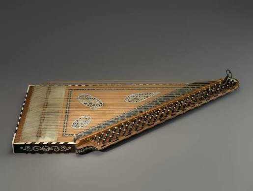
Origine et histoireCithare trapézoïdale du monde arabe, intégrée aux orchestres andalous et au tarab marocain.
FabricationNombreuses cordes, leviers (mandals) pour les micro-intervalles.
Technique de jeuCordes pincées avec des onglets ; timbre cristallin.
Rôle musicalMélodie et ornementation dans les orchestres savants.
ÉvolutionInstrument de lutherie savante, utilisé dans les conservatoires.
La tidinit تيدينيتCordophone
Origine et histoireLuth à long manche des traditions sahariennes (Maroc, Mauritanie) ; instrument masculin de la musique hassanie. Les sources mauritaniennes le décrivent comme un luth à quatre cordes, avec une caisse en bois évidée recouverte d’une peau de bœuf.
FabricationCaisse ovale recouverte de peau ; quatre cordes (deux jouées, deux sympathiques).
Technique de jeuPincé ; porte la mélodie et accompagne les poèmes. Jeu mélodique et rythmique.
Rôle musicalInstrument mélodique principal des veillées hassanies. La tidinit est l’instrument « primordial » de la musique de l’ensemble du Sahara occidental.
ÉvolutionParfois remplacé par la guitare électrique dans les formations modernes (voir l’album Hassānīya Music From The Western Sahara And Mauritania).
L’ardin الردين / آردينCordophone
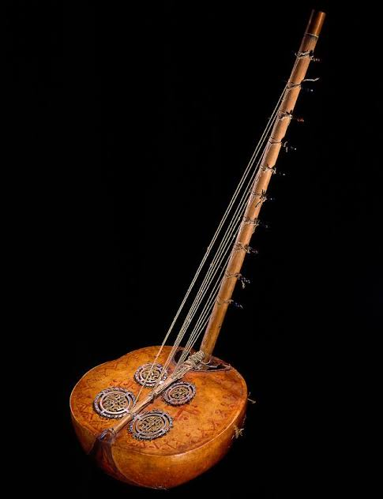
Origine et histoireHarpe arquée des traditions sahariennes, réservée aux femmes (griottes iggawins). Instrument emblématique des femmes griottes.
FabricationCalebasse hémisphérique recouverte de peau de mouton, manche d’un mètre ou plus, 9 à 14 cordes (11 à 14 selon les sources).
Technique de jeuCordes pincées ; peut servir d’instrument à percussion. L’accordage de l’ardin donne une couleur modale spécifique (Dmin7sus4 selon les analyses).
Rôle musicalAccompagne les chants féminins et les rituels domestiques.
ÉvolutionInstrument rare, transmis dans un cadre familial.
Le swisdi (suissen) السويسديCordophone
Origine et histoirePetit luth populaire de la famille du guembri, utilisé dans le chaâbi et l’aïta (région d’Abda, Safi).
FabricationCaisse en bois ou calebasse recouverte de peau ; manche tourné ; 2 à 4 cordes en nylon.
Technique de jeuPincé ; accompagne le chant populaire.
Rôle musicalMélodie dans les formations réduites de chaâbi et d’aïta.
ÉvolutionInstrument artisanal toujours fabriqué et joué.
Le mandole, le banjo et le violon occidental Cordophone
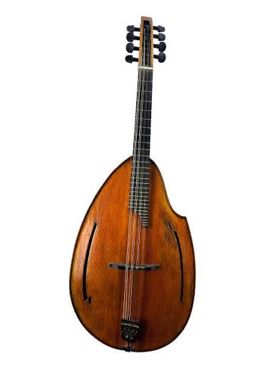
Le mandole est adopté dans le chaâbi et les formations populaires. Le banjo, introduit au XXe siècle, est très présent dans le chaâbi moderne et les groupes des années 1970 (Nass El Ghiwane, Jil Jilala). Le violon occidental (kamanja) est utilisé dans l’andaloussi, le Melhoun, l’aïta et le chaâbi, souvent joué verticalement. Les enregistrements de Christopher Wanklyn (1966) documentent le violon (kamenja) dans les formations de café et les rituels.
3.2 Instruments à percussion (membranophones et idiophones)
Le bendir (tallount, allun) البندير / تالونتMembranophone
Origine et histoireTambour sur cadre attesté depuis longtemps dans les traditions amazighes ; présent dans tout le Maghreb. Décrit par Ahmed Aydoun comme un tambour de 70 cm de diamètre, avec peau de chèvre et trois ou quatre boyaux de résonance.
FabricationCadre en bois cintré (souvent 40 cm), peau de chèvre tendue. Cordes ou boyaux à l’intérieur pour le bourdonnement.
Technique de jeuTenu à la verticale, frappé des deux mains ; timbres différenciés au centre et au bord.
Rôle musicalAccompagnement dans l’ahwach, l’ahidous, le chaâbi, l’aïta et les rituels. Les enregistrements Folkways de 1966 le documentent dans les contextes Aïssawa, Gnawa et Ahouach.
ÉvolutionInstrument largement diffusé, fabriqué en petites séries.
Le bouznazel (buznazen, bendir à cymbales) البوزنازلMembranophone
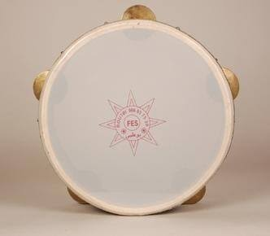
Origine et histoireGros bendir avec cymbales, très présent chez les Aïssawa et dans les fêtes de mariage populaires. Également appelé buznazen ou ‘ajsâwî. Chez les Aïssawa, le bendir se distingue des autres modèles par son châssis pourvu de cymbalettes.
FabricationBendir basse de grande taille, avec cymbales fixées sur le cadre ; tension de peau élevée, produisant un son médium puissant.
Technique de jeuClaques très puissantes ; prend une place dominante dans l’orchestre lors des phases de transe.
Rôle musicalRythme et puissance sonore dans la hadra des Aïssawa.
ÉvolutionInstrument emblématique des confréries, toujours utilisé dans les rituels.
La tbila (tbilat) الطبيلةMembranophone
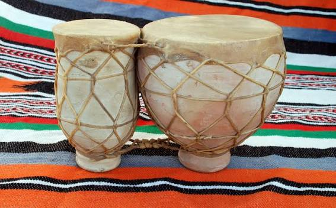
Crédit photo : Ressources Darbatook
Origine et histoirePetits tambours joués en paire, proches des bongos, présents dans les ensembles Aïssawa et certaines formations populaires. La BnF recense les tbîlat parmi les instruments reproduits dans les planches de Chottin (1939).
FabricationDeux petits fûts de tailles légèrement différentes, peaux tendues.
Technique de jeuFrappés à mains nues ou avec des baguettes fines ; jeu virtuose et polyrythmique.
Rôle musicalRythme et ornementation dans la musique confrérique. La tbila est l’un des instruments les mieux documentés de la tradition Aïssawa.
ÉvolutionInstrument artisanal, parfois remplacé par des bongos modernes.
La tassa الطاسةMembranophone / Idiophone
Crédit photo : Ressources Darbatook
Origine et histoireBol de cuivre joué avec des baguettes, utilisé dans les rituels Aïssawa et certaines formations populaires.
FabricationRécipient en cuivre ou en métal, sans membrane.
Technique de jeuFrappé avec des baguettes ; son métallique et résonnant.
Rôle musicalMarque le rythme et crée une texture sonore spécifique. Instrument rythmique mentionné dans les ensembles Aïssawa aux côtés du bouznazel et de la tbila.
ÉvolutionObjet détourné en instrument, conservé dans les confréries.
L’agoucil / agwal أكوال / أقوسيلMembranophone
Origine et histoireTambour en forme de gobelet, d’origine berbère, similaire à la darbouka mais de taille plus grande. Également appelé agoucil chez les Hmadcha. La BnF mentionne l’aguâl parmi les instruments reproduits par Chottin.
FabricationCorps en terre cuite, peau unique peinte ; connu depuis le Moyen Âge.
Technique de jeuFrappé à la main ; joué par les hommes ou les femmes lors de festivités et processions.
Rôle musicalRythme dans l’ahwach et les rituels des Hmadcha (joué de l’épaule).
ÉvolutionInstrument artisanal, parfois en métal (agual).
La taarija التعريجةMembranophone
Origine et histoirePetite percussion en terre cuite, présente dans le chaâbi, l’aïta, l’issawa, le Melhoun et l’orchestre andalou. Instrument « emblématique de l’accompagnement du Melhoun ».
FabricationPoterie à ouverture couverte de peau ; forme tronconique.
Technique de jeuFrappée à la main ; son sec et boisé.
Rôle musicalBase rythmique, souvent en complément du bendir ou de la darbouka.
Origine et histoireTambour en forme de calice, largement diffusé dans le monde arabe et au Maroc.
FabricationCorps en métal ou en céramique, peau tendue.
Technique de jeuFrappée avec les doigts et la paume.
Rôle musicalBase rythmique du chaâbi, du tarab et de l’orchestre andalou.
ÉvolutionInstrument standardisé, souvent fabriqué industriellement.
Les qraqeb (krakeb) القراقبIdiophone
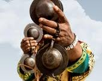
Origine et histoireCastagnettes métalliques de la tradition gnawa, également utilisées par les Hmadcha. Chottin les décrit comme des castagnettes métalliques d’origine « soudanaise ».
FabricationGrandes castagnettes doubles en fer forgé à la main.
Technique de jeuTenues dans chaque main ; entrechoquées pour un rythme répétitif.
Rôle musicalStructurent le rythme et accompagnent la transe. Indispensables au trio gnawa (guembri, qraqeb, chant).
ÉvolutionInstrument acoustique, parfois amplifié.
Le tbel / tbal الطبلMembranophone
Origine et histoireGrand tambour cylindrique utilisé dans les processions, la lila gnawa, les rituels issawa et les fêtes. La BnF mentionne le tbel dans les planches de Chottin.
FabricationDeux peaux tendues sur un fût cylindrique.
Technique de jeuBaguettes courbe et droite.
Rôle musicalRythme puissant ; dans le trio gnawa, le duo guembri + qraqeb reste central. Les enregistrements de 1966 distinguent le tbel gnawa du gannega cylindrique.
ÉvolutionInstrument acoustique, parfois amplifié.
Le naqqous الناقوسIdiophone
Origine et histoireInstrument métallique joué par les Rwaïss et dans les villages amazighs. L’encyclopédie SAGE le décrit comme une cloche à l’origine en tube de cuivre, aujourd’hui fabriquée à partir d’un tambour de frein de voiture et frappée avec deux baguettes métalliques.
FabricationMétal (cuivre, laiton, tambour de frein réutilisé) frappé avec des tiges de fer.
Technique de jeuFrappé comme un tambour ; accompagne le ribab et le lotar.
Rôle musicalAccompagnement rythmique dans les formations de Rwaïss.
ÉvolutionFacture variable, souvent improvisée.
La naqqara (naqarat) النقارة / النقاراتMembranophone
Origine et histoirePaire de petites timbales en terre cuite, utilisée dans les contextes rituels et processionnels, et dans l’orchestre andalou.
FabricationDeux pots en terre cuite reliés par des lanières de peau.
Technique de jeuFrappées avec des baguettes.
Rôle musicalRythme et signal dans les processions et les mariages.
ÉvolutionInstrument artisanal, parfois remplacé par des timbales modernes.
Le tar, le daff et le riq الطار / الدف / الرقMembranophones
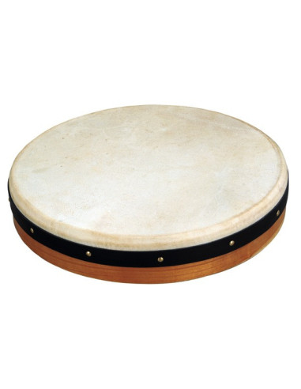
TarTambourin sur cadre, utilisé dans l’andaloussi et les musiques savantes ; certaines variantes ont des cymbalettes.
DaffTambour sur cadre, parfois avec anneaux ou cymbalettes ; employé dans les chants spirituels et populaires. Les enregistrements de 1966 mentionnent un djouf (grand tambour sur cadre) dans les contextes rituels.
RiqPetit tambourin à cymbalettes, utilisé dans la musique arabo-andalouse et le tarab.
La sinja (sinia) الصنجة / الصينيةIdiophone
Origine et histoirePlateau métallique (plateau à thé) frappé avec des baguettes, emblématique de l’Aïta Chaïdmiya (Safi, Essaouira).
FabricationPlateau en métal, souvent un plateau de service à thé détourné.
Technique de jeuFrappé avec des baguettes ; produit un rythme aigu et métallique.
Rôle musicalMarque le rythme dans l’Aïta Chaïdmiya, aux côtés du megroune et du loutar.
ÉvolutionObjet du quotidien transformé en instrument, conservé dans cette tradition régionale.
Les ciseaux (mqass) المقصIdiophone
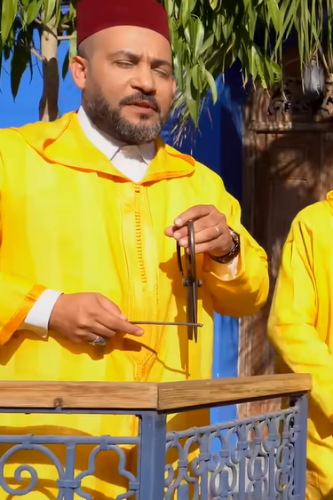
Origine et histoireInstrument rythmique des Abidat Rma (Chaouia), à l’origine utilisés pour tondre les moutons.
FabricationPaire de grands ciseaux en acier.
Technique de jeuEntrechoquement des lames, frappées avec une tige en acier.
Rôle musicalMarque le rythme et donne une couleur unique aux spectacles.
ÉvolutionInstrument emblématique conservé dans les performances traditionnelles.
La guedra القدرةMembranophone
Origine et histoirePercussion en poterie saharienne, associée à la danse du même nom, pratiquée par les femmes.
FabricationPoterie recouverte de peau.
Technique de jeuFrappée à mains nues par les femmes.
Rôle musicalRythme des célébrations féminines et des transes.
ÉvolutionInstrument rituel conservé dans les pratiques féminines.
3.3 Instruments à vent (aérophones)
La ghaita (rhaïta) الغيطةAérophone
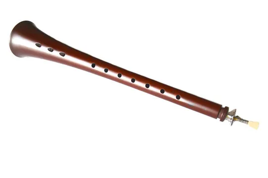
Origine et histoireHautbois à anche double, utilisé dans les processions, moussems, l’aïta, le rituel issawa et chez les Hmadcha. Également appelé rhaïta.
FabricationCorps en bois, anche double en roseau.
Technique de jeuSouffle continu, jeu énergique ; son puissant.
Rôle musicalMélodie et signal ; guide le rituel issawa. Larousse cite la « musette (ghaïta) » parmi les instruments populaires marocains.
ÉvolutionParfois amplifié dans les grandes processions.
Le megroune (magrouna, meghroune) المقرونةAérophone
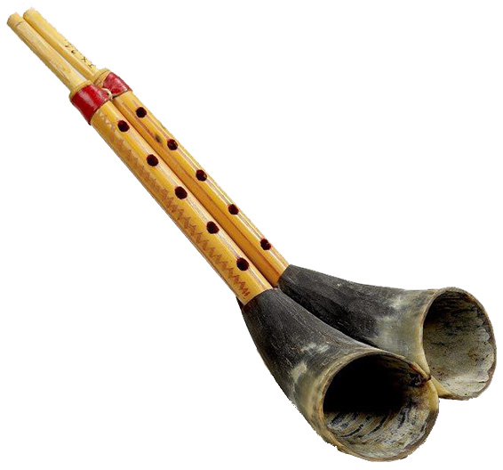
Origine et histoireInstrument à vent à deux tuyaux et anches, caractéristique de l’Aïta Chaïdmiya (Safi, Essaouira). Version sans réservoir du mezoued.
FabricationDeux tuyaux mélodiques avec anches, sans sac (contrairement au mezoued).
Technique de jeuSouffle continu ; son « étrange » et envoûtant. Mentionné dans l’anthologie Chikhates et Chioukhs de l’Aïta aux côtés du luth, du loutar et du violon.
Rôle musicalMélodie principale dans l’Aïta Chaïdmiya, aux côtés du loutar et de la sinja.
ÉvolutionInstrument régional, moins répandu que la ghaita.
Le zamar (azamar) الزمّارAérophone
Origine et histoireClarinette double berbère du Rif oriental (Nador, Berkane, Driouch), jouée dans la Reggada et les fêtes. Ahmed Aydoun le cite parmi les instruments populaires, aux côtés de la gayta et de l’adjun (tambourin sur cadre).
FabricationDeux tuyaux de bambou (environ 42 cm) terminés par des cornes de vache ; anches simples liées à la cire d’abeille.
Technique de jeuSe joue face à face, en gonflant les joues ; son grave et bourdonnant.
Rôle musicalMélodie principale dans la Reggada.
ÉvolutionParfois remplacé par la ghaita ou le saxophone dans les formations modernes.
Le nay, la gasba et l’awad الناي / القصبة / العوادAérophone
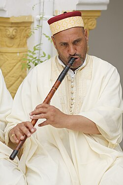
NayFlûte en roseau des traditions savantes et soufies, ouverte aux deux extrémités.
GasbaFlûte en roseau utilisée dans la Reggada, les Jilala et les traditions populaires. La BnF mentionne la gasba dans les instruments reproduits par Chottin.
AwadFlûte traditionnelle en roseau attestée dans les traditions marocaines. Les enregistrements Smithsonian Folkways de 1966 documentent l’awad dans les contextes ruraux.
Le nifara / nafir النفارة / النفّارAérophone
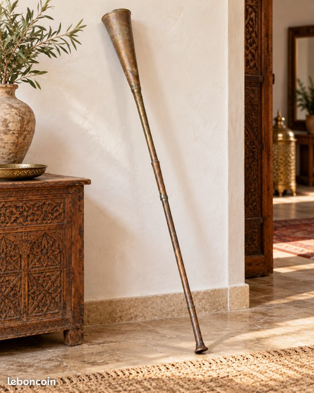
Crédit photo : Université de Würzburg, collection d’instruments
Origine et histoireLongue trompette droite en métal, utilisée dans la musique hassanie, lors du Ramadan et par les Hmadcha (n’fir). La BnF mentionne la rhaïta nfîr dans les instruments reproduits par Chottin (1939).
FabricationLaiton ou cuivre, environ 1,50 m à 1,84 m, en trois parties.
Technique de jeuInstrument à vent ; son puissant et signalétique.
Rôle musicalSignal, appel, processions.
ÉvolutionConservé dans les traditions sahariennes et confrériques.
La zouzâya الزوزايةAérophone (à confirmer)
Origine et histoireInstrument mentionné dans les répertoires patrimoniaux hassanis.
Technique de jeuAssocié aux répertoires de poésie chantée saharienne.
Rôle musicalAccompagnement des chants et veillées.
ÉvolutionInstrument rare, à documenter.
3.4 Autres instruments et objets sonores
Au-delà des instruments classifiés, les pratiques musicales marocaines mobilisent des objets sonores : claquements de mains (tasfiq), sonnailles, crotales, bijoux métalliques, bâtons. Les Hmadcha utilisent des cymbales à main (qarqaba). Les Abidat Rma ont fait des ciseaux un instrument rythmique. Les Aïssawa frappent des bols de cuivre (tassa). La BnF recense également la ta’nja et le zamr parmi les instruments reproduits dans les planches de Chottin.
Note documentaire : certains noms comme agoucil, hajhuj ou bouznazel nécessitent encore une vérification ethnographique et régionale. Il ne faut pas confondre les variantes d’un même instrument avec des instruments totalement différents. Le catalogue Instruments des musiques populaires et de confréries au Maroc (Bpi, 1998) reste une référence pour croiser les appellations.
4. Les traditions musicales amazighes
4.1 Ahwach (أحواش)
Origine et région. Souss, Haut Atlas et Anti-Atlas. Danse chantée collective en cercle ou en rangées, pratiquée lors des fêtes agricoles, des mariages et des moussems. Le terme ahwach (ou ahouach) désigne à la fois la danse, le chant et l'événement social qui les réunit.
Instruments. Bendir (tallount), agwal, tambours sur cadre, flûtes, battements de mains. Les enregistrements de 1966 documentent l’Ahouach lors du Moussem de Moulay Brahim. Le bendir y joue un rôle structurant : il marque le cycle rythmique sur lequel se greffent les voix.
Rythmes et chants. Cycles répétitifs, chants en tachelhit (poétiques, satiriques ou rituels). Les phrases musicales alternent souvent entre un chœur et un soliste, dans un jeu de question-réponse qui peut durer plusieurs heures.
Transmission. Longtemps transmis oralement au sein des villages et des familles, l'ahwach est aujourd'hui porté par des associations, des troupes de festivals et des conservatoires, tout en restant une pratique vivante des communautés rurales.
Origine et région. Moyen Atlas. Danse-chant collectif en ligne ou en cercle, pratiqué lors des fêtes villageoises, des mariages et des rassemblements saisonniers. Le terme ahidous désigne à la fois la danse, le chant et le rassemblement social.
Instruments. Bendir (tallount), tambours sur cadre, percussions, battements de mains. Le bendir structure le cycle rythmique, tandis que les voix alternent entre chœur et soliste.
Rythmes et chants. Chants en tamazight, poésie orale. L’encyclopédie SAGE souligne que l’ahidous et l’ahwash réunissent hommes et femmes en cercle, accompagnés de tambours sur cadre.
Origine et région. Souss. Musiciens-poètes professionnels itinérants, les rwaïss (singulier raïs) parcourent les villages et les marchés pour réciter, chanter et commenter l'actualité, la morale ou l'amour. Leur art mêle poésie, musique et joute verbale.
Instruments. Ribab (vièle monocorde) et lotar (luth), bendir, naqqous, taarija, parfois violon. L’ensemble caractéristique est ribab – lotar – percussions. Le ribab porte la mélodie, le lotar assure la trame rythmique, et le naqqous (cloche métallique) marque la pulsation.
Figures. Raïs Lḥaj Belaïd (1872–1945), Raïs Muḥammad ben Lahcen. L’anthologie des rwaïyes (1990) offre un corpus de référence. Des artistes contemporains comme Mohamed Rouicha (1950–2012) ont prolongé cette tradition en l'ouvrant à d'autres publics.
Moyen Atlas. L'ahidous y est pratiqué avec le lotar et le bendir, en cercle ou en ligne. Les chants en tamazight alternent entre soliste et chœur, sur des cycles rythmiques répétitifs.
Rif oriental. Le Rif est le domaine de la Reggada et du zamar (voir section 5). La Reggada, danse de guerre à l'origine, est aujourd'hui une pratique festive et scénique, jouée au zamar, au bendir (adjoun) et à la gasba (tamja).
Recherches. Ahmed Aydoun a consacré plusieurs ouvrages à ces répertoires, notamment à la musique amazighe et hassanie, documentant les instruments, les modes et les contextes rituels.
5. Les musiques populaires marocaines
5.1 Aïta (العيطة) et ses variantes régionales
Origine et région. Plaines atlantiques. Genre rural et semi-urbain de chant et de poésie performative, associé aux cheikhat (chanteuses) et aux chioukhs (chanteurs). Le terme signifie « cri » et renvoie à une expression à la fois amoureuse, religieuse et protestataire, où la voix occupe une place centrale.
Instruments communs. Bendir, taarija, kamanja, loutar, oud, darbouka ; le megroune et la sinja sont spécifiques à la Chaïdmiya. L’anthologie Chikhates et Chioukhs de l’Aïta (2018) documente ces variantes sur trois années d’enregistrement.
Transmission et évolution. Longtemps transmise oralement lors des fêtes et des moussems, l'aïta est aujourd'hui portée par des festivals (comme le Festival de l'Aïta à Safi) et des artistes qui la réinterprètent. Des figures comme Zohra El Fassia (1905–1994) ou Abida Sarma ont contribué à sa diffusion au-delà des cercles régionaux.
5.2 Chaâbi (الشعبي)
Origine et région. Villes et plaines atlantiques (Casablanca, Rabat, Safi). Musique urbaine de fête et de scène, née dans les années 1920–1930 au contact des migrations rurales vers les grandes villes.
Instruments. Lotar, swisdi, bendir, taarija, darbouka, ghaita, kamanja, banjo, mandole. Les formations modernes y ajoutent souvent clavier, guitare électrique et batterie.
Évolution. Renouvelé dans les années 1970 par Nass El Ghiwane, Jil Jilala et Lemchaheb. L’encyclopédie SAGE souligne l’influence du halqa (théâtre de rue) et des enregistrements 45 tours sur la structuration du genre. Aujourd'hui, le chaâbi reste une musique de fête et de scène, jouée dans les mariages, les cafés et les festivals.
Origine et région. Chaouia (Khouribga, Khémisset). Anciens tireurs d’élite de l’armée impériale, dont les descendants ont conservé et transformé les pratiques martiales en un répertoire chanté et dansé.
Instruments. Bendir, taarija, ciseaux (mqass) utilisés comme instrument rythmique. Les ciseaux, à l'origine utilisés pour tondre les moutons, sont entrechoqués ou frappés avec une tige d'acier pour produire un rythme métallique très reconnaissable.
Caractéristiques. Chants collectifs, humour, poésie, costumes traditionnels. Les spectacles mêlent satire sociale, éloge, et jeux scéniques hérités des anciennes joutes oratoires.
Origine et région. Région de Tissa et Taounate (province de Taounate, Rif central / pré-Rif). Répertoire populaire rural, souvent mentionné aux côtés du chaâbi, de l’aïta et du malhoun. Le terme hayti (parfois orthographié hayt ou hyati) désigne un genre de chant et de poésie performative, lié aux fêtes villageoises, aux mariages et aux veillées de cette région.
Instruments. Instruments variables selon les formations : bendir, taarija, lotar, ghaita, parfois kamanja ou darbouka. L'instrumentation n'est pas codifiée comme dans l'aïta ou le chaâbi, ce qui donne au hayti une grande souplesse d'exécution.
Caractéristiques. Chants collectifs, poésie orale en darija, échanges entre soliste et chœur. Le répertoire est transmis oralement et reste vivant dans les zones rurales de Tissa et Taounate, notamment lors des mariages et des moussems.
Origine et région. Rif oriental (Nador, Berkane, Driouch, Al Hoceima). Danse de guerre à l’origine, la reggada était pratiquée par les tribus rifaines avant les combats ou lors des célébrations de victoire. Elle est aujourd'hui devenue une danse festive et scénique, exécutée en ligne ou en cercle, avec des mouvements d'épaules et de fusils symboliques.
Instruments.Zamar (clarinette double), bendir (adjoun), tamja (gasba), parfois ghaita, darbouka, et instruments modernes (saxo, batterie). Le zamar reste l'instrument emblématique de la reggada, avec son timbre grave et bourdonnant.
Figures. Talbi One (Abdelkader Talbi), figure emblématique de la reggada moderne, qui a contribué à la faire connaître au-delà du Rif.
Origine et région. Oriental (Oujda, Berkane, Ouled Aoujdalia). Tradition festive bédouine, l'aarfa (ou arfa) est pratiquée lors des mariages, des fêtes de circoncision et des rassemblements tribaux. Elle mêle chant, danse et poésie, avec une forte dimension collective.
Instruments. Bendir, zamar (clarinette double à deux cornes), percussions. Le zamar, instrument à anche double terminé par des cornes de vache, donne à l'aarfa sa couleur sonore caractéristique.
Caractéristiques. Chants collectifs en darija, rythmes bédouins, danse en ligne ou en cercle. La tradition reste vivante dans l'Oriental marocain, notamment autour d'Oujda et de Berkane.
Origine et région. Montagnes du Nord-Ouest (Tanger, Tétouan, Ouezzane, Asilah), pays Jbala. La taqtoqa jabalia (« petite pièce montagnarde ») est un genre de chant citadin et rural propre aux Jbala, mêlant poésie en darija, mélodies raffinées et accompagnement instrumental.
Instruments. Violon, luth, taârija, bendir, tar. Le violon (kamanja) y joue un rôle mélodique central, souvent en dialogue avec le luth.
Figures. Cheikh Ahmed El Guerfti, Mohamed Laaroussi. Les enregistrements de 1966 incluent une plage de Toqtoqa Jabalia, qui documente ce répertoire pour la postérité.
Caractéristiques. Chants en darija, poésie raffinée, rythmes souples. La taqtoqa jabalia est souvent considérée comme une forme savante et urbaine des traditions jbalas, à mi-chemin entre le malhoun et les répertoires ruraux.
Origine. Communautés afro-descendantes, héritage d’Afrique de l’Ouest. La tradition gnawa s'est constituée au Maroc à partir du XVIIe siècle, à la croisée des apports subsahariens et du soufisme marocain. Elle est inscrite au patrimoine culturel immatériel de l'UNESCO depuis 2019.
Rituel.Lila (ou derdeba), cérémonie de guérison et de possession dirigée par un maâlem. La nuit se déroule en plusieurs phases, chacune associée à une couleur et à une entité spirituelle (mlouk), jusqu'à la transe (jadba).
Instruments. Guembri (sintir, hajhuj), qraqeb, tbel (ganga). Le trio emblématique est guembri – qraqeb – chant. Le guembri porte la mélodie et le rythme, les qraqeb structurent la pulsation, et la voix du maâlem conduit le rituel.
Recherches. La thèse de Nathalie Fernando (Université de Montréal) analyse l’identité, les représentations, les instruments rituels et les transes des Gnawa. Les travaux de Cynthia Becker (Blackness in Morocco) portent sur l’identité gnawa à Essaouira. L'article de Sum sur la sersera du guembri documente les adaptations contemporaines de l'instrument.
Figures. Mahmoud Ghania (« Mahmoud Guinea »), Hamid El Kasri, Abdelkbir Marchane. La scène gnawa contemporaine se déploie chaque année au Festival Gnaoua d'Essaouira, qui accueille des musiciens du monde entier.
Origine. Confrérie soufie fondée par Sidi Mhammed ben Aïssa (v. 1465–1526), dont le sanctuaire se trouve à Meknès. La confrérie s'est diffusée dans tout le Maroc et au-delà, avec des branches régionales aux pratiques parfois distinctes.
Rituel.Dhikr et hadra, avec transe possible. La hadra issawa se déroule en plusieurs phases, alternant invocations chantées, louanges au Prophète et moments de transe collective, souvent accompagnés de parfums (encens) et de gestes rituels.
Instruments.Ghaita (hautbois), bendir, bouznazel (gros bendir à cymbales), tbila (petits tambours en paire), taarija, tassa (bol de cuivre), nfera (trompe). La ghaita est parfois appelée mizmar ou zurna. L’encyclopédie SAGE précise que le tbal (tambour à deux peaux) et la ghaita sont les instruments principaux des Aïssawa.
Caractéristiques. La hadra issawa est l'une des plus spectaculaires des confréries marocaines : les tambours, la ghaita et les cymbales créent une polyrythmie puissante qui soutient la transe. Les rituels ont lieu lors des moussems, des fêtes religieuses et de certaines célébrations privées.
Origine. Confrérie soufie liée à Sidi Ali ben Hamdouch (XVIIe siècle), basée à Fès. La confrérie s'est diffusée dans tout le Maroc, avec une présence forte à Fès, Meknès et dans le Souss.
Rituel.Lila pour obtenir la baraka et induire une transe thérapeutique. Invocation d’Aïcha Qandicha, figure spirituelle centrale du panthéon hmadcha. La lila hmadcha se distingue par son intensité rythmique et la participation active des adeptes.
Instruments.Guembri (parfois appelé ḥašūš), gual (agwal, tambour d’épaule), n’fir (trompette), qarqaba (cymbales), taârija, ghayta, harraz (grand tambour en terre cuite tenu à l’épaule), tbal, lira (flûte). L’encyclopédie SAGE mentionne le harrazī comme ajout spécifique des Hamadsha à l’ensemble Aïssawa.
Caractéristiques. La musique hmadcha est reconnaissable à son usage du guembri (partagé avec les Gnawa), du harraz et du n'fir, qui créent une texture sonore unique. Les rituels mêlent invocations, percussions et transes, dans un cadre thérapeutique et spirituel.
Origine. Confrérie soufie ancienne, présente à Fès et dans plusieurs villes marocaines. Les Jilala sont rattachés à la tradition soufie et à la figure de Sidi Abdelkader Jilani (XIIe siècle), dont le nom a donné celui de la confrérie.
Rituel.Hadra thérapeutique, danse extatique, invocation des mlouk. La hadra jilala se déroule souvent la nuit, en plusieurs phases, avec des invocations chantées, des percussions et des moments de transe. Elle est réputée pour son caractère apaisant et thérapeutique.
Instruments.Bendir et qasba (flûte de roseau à biseau) ou lyra (flûte à bec). L’encyclopédie SAGE confirme que les Jilala accompagnent leurs cérémonies avec le bendīr et la qasaba (longue flûte soufflée par le bout). Les Aïssawa ont adapté certains de leurs rythmes en remplaçant les flûtes par des hautbois (reta).
Caractéristiques. La musique jilala se distingue par la sobriété de son instrumentation (bendir + flûte) et par la place centrale du chant et de la transe. Elle est souvent décrite comme plus intime et méditative que celle des Aïssawa ou des Hmadcha.
Origine. Héritage andalou, tradition savante. Onze nûbât conservées, construites sur environ vingt-six modes (tab’). Écoles de Fès, Rabat, Tétouan, Oujda (gharnati). L'al-âla est la musique classique du Maroc, transmise dans les conservatoires et les orchestres andalous.
Structure. Chaque nûba est une suite de pièces vocales et instrumentales organisées selon un mode et un rythme donnés, avec des mouvements lents puis rapides. L'ensemble peut durer plusieurs heures.
Instruments. Oud, kouitra (luth andalou), oud ramal (luth historique à quatre cordes doubles), rebab, kamanja, qanoun, nay, tar, riq, darbouka, naqarat. Larousse précise : « luths (oûd-s et kwitra-s), vièles et violons (rabâba-s et kamânja), cithares (qânûn-s), flûtes obliques (nây-s) et percussions (târ-s et darabuka-s) ».
Caractéristiques. La musique al-âla se distingue par sa rigueur formelle, son raffinement mélodique et l'importance du tarab (l'émotion suscitée chez l'auditeur). Elle est aujourd'hui enseignée dans les conservatoires et jouée lors des festivals de musique andalouse.
Origine et région. Style andalou associé à Grenade, développé à Oujda et Rabat. Le gharnati (« de Grenade ») est une branche de la musique andalouse marocaine, distincte de l'al-âla par son répertoire, ses modes et son style d'interprétation. Il est particulièrement cultivé à Oujda, où il constitue une tradition vivante.
Instruments. Instruments similaires à ceux d’al-âla : oud, kouitra, rebab, kamanja, qanoun, nay, tar, riq, darbouka, naqarat.
Caractéristiques. Le gharnati se distingue par ses nûbât propres, ses modes spécifiques et un style d'interprétation plus libre que celui de l'al-âla. Il est souvent joué lors des festivals de musique andalouse, notamment à Oujda et à Tétouan.
Origine. Poésie populaire chantée en darija, pratiquée à Fès, Meknès, Marrakech, Salé. Le malhoun (« ce qui est mélodieux ») est un répertoire de poésie chantée, souvent composé de longues qasidas (poèmes) abordant l'amour, la morale, la religion ou la satire sociale.
Instruments.Taarija (emblématique), kamanja, oud, rebab, bendir, darbouka, riq, lotar, qanoun, violon, alto. L’instrumentation est moins codifiée que dans l’al-âla : elle varie selon les formations et les régions, ce qui donne au malhoun une grande souplesse d'exécution.
Caractéristiques. Le malhoun se distingue par la centralité du texte poétique, souvent composé en arabe dialectal (darija) et transmis oralement ou par des recueils. Il est joué lors des veillées, des fêtes et des rassemblements, et reste une pratique vivante dans les villes impériales.
Définition. Le tarab désigne une expérience musicale et émotionnelle : l'état de ravissement, d'émotion intense que procure l'écoute d'une musique. Ce n'est pas un genre en soi, mais une qualité d'exécution et d'écoute qui traverse les répertoires savants et populaires.
Instruments. Dans les formations marocaines : oud, qanoun, kamanja, violon, rebab, kouitra, nay, riq, tar, darbouka, violoncelle, alto, contrebasse. Les formations contemporaines ajoutent piano, clavier, guitare et instruments électroniques.
Caractéristiques. Le tarab repose sur le jeu ornementé, les modulations modales et la relation entre musiciens et auditeurs. Il est au cœur de l'al-âla, du malhoun et des répertoires vocaux arabes, et reste une référence esthétique pour les musiciens marocains contemporains.
Origine et région. Populations sahariennes du sud marocain et de l’ouest saharien (Mauritanie, Sahara occidental). La musique hassanie accompagne la poésie chantée en hassaniya, langue arabe dialectale du Sahara, lors des veillées, des fêtes et des rituels domestiques.
Système modal. Le haul repose sur cinq échelles (Kar, Fagu, Sennima, Raju, etc.). Chaque échelle correspond à une couleur modale et à un répertoire de poèmes associés.
Instruments.Tidinit (luth masculin), ardin (harpe féminine), tbal (tambour en coupe), guedra (poterie), nifara (trompette), zouzâya, gasba et neyfara (flûtes). Les sources mauritaniennes ajoutent la cumbra et la rebaba aux instruments à cordes.
Répartition genrée. La tidinit est principalement jouée par les hommes, l’ardin est réservée aux chanteuses ; le tambour est unisexe. Cette répartition reflète l'organisation sociale des communautés sahariennes, où les griottes (iggawins) occupent une place centrale dans la transmission.
Origine et région. Danse et tradition musicale saharienne, associée à la percussion en poterie du même nom, pratiquée par les femmes. La guedra est attestée dans les communautés sahariennes du sud marocain, de Mauritanie et du Sahara occidental.
Instruments. La percussion guedra (poterie recouverte de peau, frappée à mains nues) constitue le cœur rythmique. Elle peut être accompagnée de voix, de battements de mains et parfois d'autres percussions.
Caractéristiques. La guedra est une danse rituelle et festive, souvent exécutée lors des célébrations féminines, des mariages et des rituels de transe. Les mouvements des mains, des épaules et de la tête accompagnent le rythme, dans un dialogue entre la percussionnaire et les danseuses.
Définition. Le haul (ou ḥawl) désigne le système modal de la musique hassanie, organisé autour de cinq échelles principales (Kar, Fagu, Sennima, Raju, etc.). Chaque échelle possède sa couleur, son répertoire de poèmes et ses rythmes associés.
Instruments. Le tidinit (luth masculin) est l'instrument de base, tandis que le tbal (tambour en coupe) assure le pilier rythmique, souvent joué par les femmes. L'ardin (harpe) et les voix complètent l'ensemble.
Caractéristiques. Le haul structure la poésie chantée saharienne : chaque poème est associé à un mode, et l'interprétation repose sur la relation entre le tidinit, le tbal et les voix. C'est un répertoire transmis dans un cadre familial et communautaire.
9. Tableau de correspondance : traditions et instruments
Raïs Lḥaj Belaïd (1872/1874–1945) : maître fondateur d’une école de rwaïss.
Raïs Muḥammad ben Lahcen (né vers 1856) : disciple de Lḥaj Belaïd.
Mohamed Rouicha (1950–2012) : chanteur emblématique de l’Atlas.
Cheikhat et voix féminines
Zohra El Fassia (1905–1994) : l’une des premières cheikhat à enregistrer.
Abida Sarma : figure de la musique populaire (chaâbi, aïta).
Groupes historiques et modernes
Nass El Ghiwane, Jil Jilala, Lemchaheb : renouveau des années 1970.
Talbi One (Abdelkader Talbi) : Reggada moderne.
Bab L’Bluz : fusion rock/gnawa, guembri électrifié.
Jbara : pionnier de la fusion marocaine.
12. Préservation, transmission et évolution
Apprentissage et transmission
Longtemps informelle (famille, maîtres, confréries), la transmission est aujourd’hui assurée par des conservatoires, des associations et des festivals (Gnaoua à Essaouira, Musiques Sacrées à Fès, Festival de l’Aïta à Safi). Le Malhoun illustre cette double transmission. La création de l’association Rawafid Moussiqia pour la reconstitution de l’oud ramal montre comment des acteurs locaux peuvent sauvegarder un instrument disparu.
Artisanat et lutherie
La fabrication des instruments reste essentielle. À Essaouira, des maîtres luthiers fabriquent des guembris en adaptant parfois les modèles à la scène (micros, égaliseurs). Les luthiers de Tanger et d’Oujda perpétuent la facture du oud et de la kouitra. La transmission des gestes de lutherie est un enjeu de sauvegarde.
Évolution contemporaine
L’amplification et l’électrification transforment l’équilibre sonore. Le guembri devient un instrument de scène. Des artistes comme Bab L’Bluz ou Jbara croisent les traditions avec le rock, l’électro ou le jazz. Les recherches académiques (Fernando, Becker, Sum, Bousselam) documentent ces transformations.
Point de vigilance. Ne pas confondre les genres musicaux (aïta, chaâbi), les danses (ahwach, guedra), les cérémonies (lila, hadra) et les instruments. Cette distinction donne une vraie qualité documentaire au travail.
13. Lexique trilingue (français / darija / arabe)
Français
Darija
Arabe
Tambour sur cadre
Bendir / Tallount
بندير / تالونت
Gros bendir à cymbales
Bouznazel / Buznazen
البوزنازل
Tambour en gobelet (berbère)
Agwal / Agoucil
أكوال / أقوسيل
Petits tambours en paire
Tbila
الطبيلة
Bol de cuivre frappé
Tassa
الطاسة
Plateau métallique (Aïta)
Sinja / Sinia
الصنجة / الصينية
Luth
Lotar / Oud
وطار / عود
Luth andalou à quatre cordes
Kouitra / Oud Ramal
الكوترة / عود الرمل
Petit luth populaire
Swisdi
السويسدي
Vièle
Ribab / Kamanja
رباب / كمانجة
Cithare
Qanoun
قانون
Flûte
Nay / Gasba / Qasba
ناي / قصبة
Hautbois
Ghaita / Rhaïta
غيطا
Clarinette double (Aïta)
Megroune / Meghroune
المقرونة
Clarinette double (Rif)
Zamar
الزمّار
Tambour cylindrique
Tbel / Tbal
طبل
Tambour en calice
Darbouka
دربوكة
Tambour en terre cuite
Taarija
تعريجة
Castagnettes métalliques
Qraqeb
قراقب
Cloche / plaque métallique
Naqqous
الناقوس
Harpe arquée
Ardin
ردين
Luth saharien
Tidinit
تيدينيت
Flûte à deux cornes
Zamer
زامر
Trompette droite
Nifara / Nafir
النفارة
Ciseaux (instrument)
Mqass
المقص
Maître musicien (gnawa)
Maâlem
المعلم
Cérémonie nocturne
Lila
الليلة
Entités spirituelles
Mlouk
الملوك
Transe
Jadba
الجذبة
14. Ressources documentaires
Les ressources ci-dessous permettent de croiser les descriptions historiques, ethnomusicologiques et les exemples sonores. Elles complètent les références déjà citées dans le corps du texte.
Catalogues, bibliothèques et archives
Ressource
Contenu et intérêt
BnF — Catalogue général
Notice du Tableau de la musique marocaine d’Alexis Chottin (1939), avec la liste des instruments reproduits : aguâl, bendir, derbouka, gasba, guenbri citadin, grand guenbri, lîra, luth, qaraqeb, rebab, rhaïta nfîr, tambourin, ta’nja, tar, tbel, tbîlat, violons, zamr. Une source fondamentale pour l’organologie historique.
Bpi — Catalogue
Instruments des musiques populaires et de confréries au Maroc : fragments de musées (1998). Répertoire d’instruments sélectionnés dans les collections des principaux musées marocains, avec une réflexion sur les genres musicaux associés.
CREM-CNRS — Archives sonores
Instruments de musique du Maroc et d’al-Andalus (1999), catalogue d’exposition (Abbaye de Royaumont) par Catherine Homo-Lechner et Christian Rault, avec un disque compact de « palette sonore » correspondant aux instruments exposés.
BnF — Corpus de musique marocaine
Publication dirigée par Prosper Ricard (1931), fascicule I : Nouba de Ochchâk. Témoignage de la transcription savante du répertoire andalou au début du XXe siècle.
Abhatoo — Centre national de documentation (Maroc)
Références d’ouvrages en arabe sur la musique andalouse et l’histoire de la musique marocaine, dont الموسيقى الأندلسية المغربية (Ben Abdeljalil, 1988) et مدخل إلى تاريخ الموسيقى المغربية (1983), avec des chapitres consacrés aux instruments.
Enregistrements et anthologies sonores
Ressource
Contenu et intérêt
Smithsonian Folkways — Music of Morocco
Enregistrements réalisés par Christopher Wanklyn en 1961–1962, publiés en 1966. Panorama des musiques « de tous les jours », sacrées et profanes : Aïssawa, Gnawa, Toqtoqa Jabalia, Ahouach du Moussem de Moulay Brahim, musiciens de café de Tétouan. Instruments documentés : tarija, awad, rhaita, kamenja, guinbri, bendir, gannega, qsbah, djouf, taarij.
Maroc : anthologie des rwaïyes (1990)
Coffret préparé par le ministère de la Culture marocain et la Maison des Cultures du Monde, avec des notes historiques et techniques de Mohamed Banaïssa et Ahmed Aydoun. Ensemble instrumental : rebâb (vièle à pique), lûtâr (luth), percussions.
Hassānīya Music From The Western Sahara And Mauritania
Enregistrements récents documentant le tidinit, l’ardin, le tbal et les formations modernes (synthétiseur, guitare). Utile pour entendre la coexistence des instruments traditionnels et électriques.
Chikhates et Chioukhs de l’Aïta (2018)
Anthologie consacrée à l’Aïta, avec ses variantes Hasbaouia, Jeblia, Chaïdmia et Haouzia. Trois années d’enregistrement et de tournage ; instruments : meghroune, luth, loutar, violon, bendir, tambourin.
Encyclopédies et articles académiques
Ressource
Contenu et intérêt
Larousse — « Maroc : musique »
Synthèse classique sur la musique marocaine : personnalité musicale, vingt-six modes, onze nawba-s, instruments de l’orchestre andalou (« luths (oûd-s et kwitra-s), vièles et violons (rabâba-s et kamânja), cithares (qânûn-s), flûtes obliques (nây-s) et percussions (târ-s et darabuka-s) »). Mentionne aussi la ghaïta et le bandîr dans les musiques populaires.
The SAGE International Encyclopedia of Music and Culture
Entrées sur les confréries religieuses (Aïssawa, Hamadsha, Heddawa, Jilala, Gnawa). Précise les instruments : tbal et ghaita pour les Aïssawa ; harrazī (grand tambour en terre cuite) pour les Hamadsha ; bendīr et qasaba pour les Jilala. Analyse aussi l’influence du halqa et des technologies sur les pratiques contemporaines.
Nathalie Fernando — Les Gnawa du Maroc : intercesseurs de la différence ?
Thèse de doctorat (Université de Montréal) : étude ethnomusicologique, ethnopoétique et ethnochoréologique des Gnawa, de leurs instruments rituels, de leurs performances et de leurs transes. Présente dans toutes les grandes villes du Maroc.
Cynthia J. Becker — Blackness in Morocco: Gnawa Identity Through Music and Visual Culture
Ouvrage universitaire sur la conscience historique des Gnawa, leurs cérémonies, leurs instruments et la scène d’Essaouira. S’appuie sur des archives et une recherche de terrain prolongée.
Sum — « The sersera of the guembri »
Article anthropologique sur le dispositif sersera (anneaux métalliques fixés sur la caisse du guembri), dans le contexte des diasporas gnawa à Bruxelles et au Maroc. Analyse le rôle de cet idiophone intégré dans le luth rituel.
Bousselam (2022)
Travail cité sur la disparition puis la reconstitution de l’oud ramal au Maroc, avec des références aux luthiers et aux associations impliquées. Signalé dans les archives documentaires sur la musique marocaine.
Chottin, Alexis — Tableau de la musique marocaine (1939)
Ouvrage fondateur de l’ethnomusicologie marocaine, avec des planches d’instruments (aguâl, bendir, derbouka, gasba, guenbri, lîra, luth, qaraqeb, rebab, rhaïta nfîr, ta’nja, tar, tbel, tbîlat, violons, zamr), des notations musicales et une bibliographie. Toujours cité dans les études sur les Gnawa et la musique andalouse.
Ressources en ligne et portails
Ressource
Contenu et intérêt
UNESCO — Patrimoine culturel immatériel
Fiche sur la pratique gnawa (inscrite en 2019) et documents sur l’espace culturel de la place Jemaa el-Fna, où se produisent musiciens amazighs, danseurs gnawis et joueurs de senthir (hajhouj).
IRCAM — Centre de recherche et de documentation
Ressources sur la musique amazighe, notamment des analyses du jeu d’archet du ribab soussi et de la technique du « détaché ».
Music In Africa
Article sur les musiques traditionnelles au Maroc, utile pour les variantes régionales de l’Aïta et les instruments associés (kamanja, loutar, tambourin).
Darbatook
Fiches techniques sur les percussions des confréries, notamment le bouznazel, la tbila et la tassa dans la tradition Aïssawa.
Folk Culture BH (Bahreïn) — articles sur la musique hassanie
Présentation des instruments à cordes sahariens : tidnit, ardîn, cumbra et rebaba. Le tidnit y est décrit comme l’instrument « primordial » du Sahara occidental.
Wikipédia — « Instruments de musique du Maroc »
Article synthétique (2025) recensant kamanja, loutar, rebab, oud, bendir et qraqeb, avec des indications sur leurs usages (musique amazighe, andalouse, gnawa).